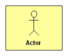
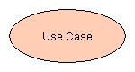
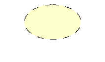

Gli use cases sono stati proposti da Jacobson []JCJO92 come un modo sistematico e naturale per la raccolta di C-requirements attraverso la specifica della interazione tra il sistema e gli agenti esterni (detti attori) ad esso interessati. L'intento è descrivere le funzionalità che danno valore al sistema e non le funzionalità relative alla sua organizzazione interna.
Figure 1. Actor
 |
Figure 2. Use case
 |
Figure 3. Use case realization
 |
L'ovale rappresenta in UML un caso d'uso (use case) che a sua volta specifica una interazione tra il sistema e uno o più actor, unitamente alle funzionalità che il sistema deve eseguire, agli occhi dei suoi utlizzatori. Un caso d'uso rappresenta una sequenza di azioni eseguita dal sistema per produrre un risultato osservabile che abbia valore agli occhi di un actor; questa azione può essere decomposta in altri use cases.
L'ovale tratteggiato rappresenta una collezione di oggetti che interagiscono per realizare un use case o un'operazione. Questa icona viene anche usata per rappresentare un pattern o una collaborazione parametrizzata, cioè uno schema i cui partecipanti sono astratti e sono sotituiti da enti concreti al momento dell'utilizzo.
Tra i diversi tipi di diagrammi delle attività, i sequence diagram richiedono una decomposizione ad oggetti, che deve essere impostata rimanendo sempre dal punto di vista dell'utente, evitando di introdurre concetti che riguardano la progettazione. A tal fine, le classi che compaiono nelle swimlines sono rappresentative degli attori che iniziano azioni distinte e delle classi-chiave del dominio.